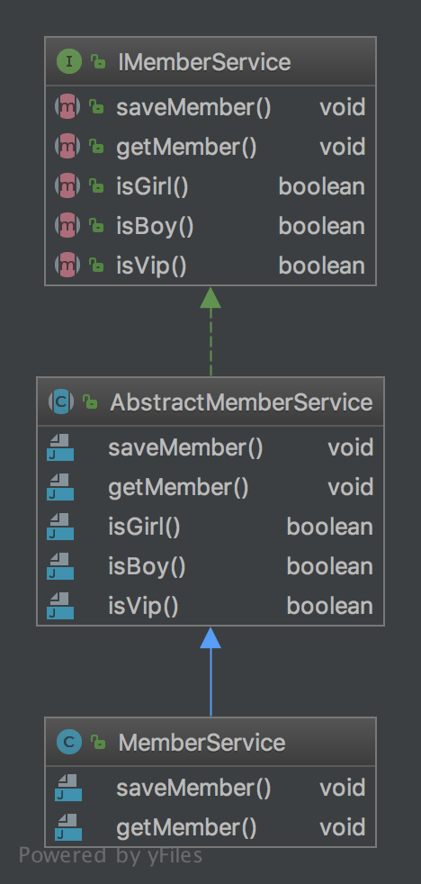

设计模式学习之适配器
说明
在前面的文章中介绍了一些关于支付相关的功能，现在转向登录，在早些时期的系统登录就是用户使用用户名与密码进行注册，注册成功后就可以进行登录了。随着时代的发展，出现很多三方的平台，它们对外提供了获取平台用户信息的功能，例如微信、qq、微博等三方登录，在接入这些三方登录时都是遵循相应的规则，老的登录的方式需要保留，对接新的登录方式还想要使用老的登录服务，这样可以使用适配器模式来实现。
适配器模式
比如我们平常使用的转接头一样，就是一种适配器的模式。它使两个不相关的物体很好的关联在一起。对于要接入的新的登录方式，首先定义新的三方登录的接口，定义要使用的三方登录方式，如下代码示例：
package cn.imcompany.adapter;
/**
* Created by tomyli on 2018/6/22.
* Github: https://github.com/peng051410
*/
public interface ThirdLogin {
void wechatLogin(String accessToken);
void qqLogin(String accessToken);
void sinaLogin(String accessToken);
}
如上定义了微信、qq、微博三种登录方式，它们都是使用accessToken来进行认证，经用户同意后获取相应的用户的信息调用方使用。下面来进行具体的实现：
package cn.imcompany.adapter;
/**
* Created by tomyli on 2018/6/22.
* Github: https://github.com/peng051410
*/
public class ThirdLoginAdapter implements ThirdLogin {
private LoginService loginService;
public ThirdLoginAdapter() {
this.loginService = new LoginService();
}
@Override
public void wechatLogin(String accessToken) {
System.out.println("微信获取用户信息");
loginService.login(accessToken, null);
}
@Override
public void qqLogin(String accessToken) {
System.out.println("qq获取用户信息");
loginService.login(accessToken, null);
}
@Override
public void sinaLogin(String accessToken) {
System.out.println("微博获取用户信息");
loginService.login(accessToken, null);
}
}
在上面的实现，并没有重新写登录的逻辑，除了要调用三方平台的代码，登录的功能是直接使用老的登录服务实现的。在这个实现类中引用了老的服务，然后使用其已经非常成熟的功能来完成登录的操作。这样以最少的代码达到了新的需求也使老的服务可以正常运行。免去了很多测试的功能点。这种适配器叫做对象适配器。
缺省适配器
上面的登录方法比较简单，如果要适配(实现一个接口)很多的业务方法，则对于实现方是一个困难，如果不想实现所有的方法可以定义一个抽象类来实现接口的大部分方法，再继承这个类选择需要实现覆盖的方法进行处理，这样就得到了一个缺省的适配的模式。对于用户状态一般有性别、是否是VIP等一些标识信息。下面定义了一个用户的基本标识类：
package cn.imcompany.adapter.def;
/**
* Created by tomyli on 2018/6/22.
* Github: https://github.com/peng051410
*/
public interface IMemberService {
void saveMember();
void getMember();
boolean isGirl();
boolean isBoy();
boolean isVip();
}
对于实现类来不想一下子都实现，因为有些标识可以是默认的，比加默认情况是用户都不是VIP用户，面向男士的应用则默认isBoy返回true。这样可以先定义一个抽象来进行一些基本的实现。
package cn.imcompany.adapter.def;
/**
* Created by tomyli on 2018/6/22.
* Github: https://github.com/peng051410
*/
public abstract class AbstractMemberService implements IMemberService {
public abstract void saveMember();
public abstract void getMember();
@Override
public boolean isGirl() {
return false;
}
@Override
public boolean isBoy() {
return true;
}
@Override
public boolean isVip() {
return false;
}
}
接下来真正类只需要继承这个抽象类来重写一些特定的方法就可以了
package cn.imcompany.adapter.def;
/**
* Created by tomyli on 2018/6/22.
* Github: https://github.com/peng051410
*/
public class MemberService extends AbstractMemberService {
@Override
public void saveMember() {
System.out.println("saveMember");
}
@Override
public void getMember() {
System.out.println("getMember");
}
}
在上面的代码中，MemberService只需要重写saveMember和getMember方法就可以了，其它的三个方法在父类中有了默认的设置，这减少了子类实现方法的数目。缺省适配器属于类适配器，缺省适配器的结构图如下：

评论
Comments powered by Disqus